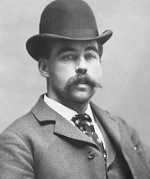
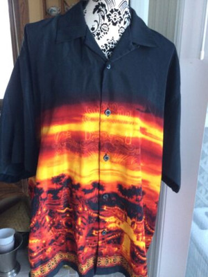

Hunter: New England
Table of Contents
- 1. People and Characters
- 1.1. GM
- 1.2. PCs
- 1.3. NPCs
- 1.3.1. Amari
- 1.3.2. Annabelle Farnsworth
- 1.3.3. Brayden White
- 1.3.4. Chad Scott
- 1.3.5. Dan
- 1.3.6. Detective Reed
- 1.3.7. DJ Grimga
- 1.3.8. Vance Dunham (aka Richard)
- 1.3.9. Katarina Iverson (aka Hazel)
- 1.3.10. George Bronson
- 1.3.11. H. H. Holmes
- 1.3.12. Isaac Sutton
- 1.3.13. Johan Ravenswood
- 1.3.14. Father Joseph Mazone
- 1.3.15. Lilly
- 1.3.16. Melissa Baker
- 1.3.17. Mia
- 1.3.18. Milena Aroynan
- 1.3.19. Misty
- 1.3.20. Nicole
- 1.3.21. Order of the Black Dragon
- 1.3.22. Regina Murphy
- 1.3.23. Remi
- 1.3.24. Rick
- 1.3.25. Rina Wagner
- 1.3.26. Father Whitcomb
- 1.4. Relationship Map
- 2. Campaign
- 3. Vignettes

1 People and Characters
1.1 GM
Shannon Carl
1.2 PCs
1.2.1 Andrei Croitoru

Figure 2: Andrei Croitoru
Played by: Eric
Concept: A PTSD-afflicted former jobber.
His object of focus is an oily rag approximately 1 foot square, which he found in the engine room of the ship that brought him across the Atlantic. When Andrei concentrates on it, the oil stains ripple and dance in proportion to the distance between him and the unnatural creature.
1.2.2 Aurora Llayne
Figure 3: Aurora
Played by: Char
Age: 54
Concept: Private investigator in too deep.
Son's name is Johnny Joes.
She has a scooby gang: Opportunity Youth United.
1.2.3 Greg Jones
Figure 4: Greg Jones
Played by: Marc
Concept: An engineer with an axe to grind.
He's a mechanical and electrical engineer who works for a software company. On his off time, he makes and flies drones. One is very quiet and can track/follow people.
After his younger sister in rehab in NH "committed suicide" (but really was eaten by Marc's previous character Marcela), he decided to seek revenge. Main skill is craft with weaponsmithing/robotics specialties.
He has a safe house with a lab down in a creepy part of town full of run-down warehouses. On the plus side, it has great sewer access.
Touchstone:
- A professor from engineering school who sometimes helps with designs.
1.2.4 Manasi
Figure 5: Manasi
Played by: Maitreyi
Pronounced Mansi (second "a" is very short and low volume).
Concept: Club promoter.
Has a great head for this kind of work and built up a name for herself in the industry.
Met a skeevy dude one night at the club Royale and finally figured out what was wrong with him: the way he talked to girls and got them to follow him into dark corners. One of them wound up dead and no one could pin it on him, but she knew it was him. Wants to make women, sex workers, and others in the club scene safer from people link him.
Flaw: enemy.
Touchstones:
- Bartender and bouncer from two of the bigger clubs in Boston: Vinny and Daren.
1.2.5 Rudy Buckston

Figure 6: Rudy Buckston
Played by: Gerry
Concept: kinfolk urban Tarzan/Crocodile Dundee
He and his tribe own a huge tract of land outside the city and defend it from encroachment by poachers and their ilk.
Rudy owns a lumber yard where he provides fancy wood to all the wood fired pizza places in the city.
Rudy's compound is in an industrial park between Foxborough and Boston.
Touchstones:
- Millie Best, friendly junior game warden who wandered into werewolves defending the territory from black spiral dancers. Now has nightmares about it. She's in a sanitarium in the area.
- A runaway kinfolk who wants to live a normal life. Rudy checks in on her from time to time. She has a kid (Tommy Douglas) who may or may not be a werewolf.
- Misty Moonchild, a straight up magic-using witch who runs a curio shop with a magic repository in the back, which is the library from his edge.
1.3 NPCs
1.3.2 Annabelle Farnsworth
- Annabelle Farnsworth – age 25
- Born in Wellesley, MA; attended Noble and Greenough until age 17, when she left home.
- Arrests for: Willful and Malicious Destruction of Property, Larceny Over $1200, Larceny under $1200, Reckless Operation of a Motor Vehicle, Assault and Battery by means of a Dangerous Weapon, Assault and Battery on a Police Officer, Disorderly Conduct, Discharging a Firearm within 500 Feet of a Building, Carrying a Loaded Firearm without a License, Vandalism, and Resisting Arrest.
- Parents have managed to keep her out of jail using considerable resources but have been unable to secure a conservatorship.
- Maintained semi-regular contact with family up until eight months ago. Mother filed missing persons’ report after two months of no contact, secured services of PI when police were less than helpful (considering arrest record).
- Last seen at Bottom’s Up (dive bar on Pearl St [Biddy Early’s] on the waterfront) about six months ago.
- Mother had two names Annabelle talked about semi-regularly – Shari and Jude.
- Jude might be Jude Franken, listed owner of Bottom’s Up.
- No one at the bar recognized the photo of Annabelle. None of the staff on during your recent visits had met the owner; had been hired on by shift managers.
- Cop friend (Michael Reed) let you know a woman named Mia Groves was picked up on Disorderly Conduct. Girl had no record, but she looked familiar, so he ran her through facial recognition, and she came up as a match for Annabelle Farnsworth, an open missing persons’ case. He was going to send the details over to them, but before he could his sergeant came down, had him transfer all the details over to him, and said he’d handle it. When he tried to go back in a few days later, everything was gone/locked. He remembered you had been poking around on this Annabelle’s disappearance, so he gave you a call.
1.3.3 Brayden White
1.3.4 Chad Scott
1.3.6 Detective Reed
A contact of Aurora's on the force. Invited her (and the people she's been hanging with) to look into Melissa Baker's bizarre murder.
1.3.7 DJ Grimga
1.3.8 Vance Dunham (aka Richard)
1.3.9 Katarina Iverson (aka Hazel)
Andrei first met her in the VIP room at Memoir. She nearly succeeded in compelling him to take a seat by her. She's obviously a vampire.
Manasi recognized her as a dead ringer for Katarina Iverson, the head of Iverson Bank from decades ago. She would have to be way older by now. Christopher Iverson runs it these days.
Dunham called her "my prince" in the VIP room at Memoir. Does that mean something?
1.3.10 George Bronson
Drove the black Mercedes E Class surveilling Regina's apartment, which is registered to Ani Aroynan Trust, Inc.
1.3.11 H. H. Holmes

Figure 9: H. H. Holmes
He confessed to 27 murders in 1896 and said similar things to Isaac Sutton when caught.
He was originally born in New Hampshire and executed by hanging in Pennsylvania in 1896, but the murders took place in Chicago. H. H. Holmes. He gave various contradictory accounts of his life, first claiming innocence and then claiming he was possessed by Satan. Some of the people he confessed to killing were verified as still alive. The authorities only ever confirmed that he killed one, and there are nine others they were fairly sure he killed. He built a bizarre labyrinthine structure called the Murder Hotel. His last words were well recorded: "take your time. Don't bungle it." Aurora remembers this was also something Sutton said to the executioner.
1.3.12 Isaac Sutton
A crazed serial killer Aurora helped to bring down. He brutally murdered 17 women and confessed without any hesitation when caught. Strange, mystical murder MO.
Execution video:
Most people making their last walk usually come in one of two ways: quietly and resigned or sobbing as they are dragged into the chamber by guards; Isaac Sutton was neither of those. He strode into the execution chamber confidently, with that same mask-like smile Aurora remembered from the day Reed and she had collared him. When the woman who would have been his last victim escaped, Sutton hadn’t gone on the run. He had waited patiently, collating and arranging the trophies he’d taken from the seventeen other women he’d killed and tidying up his apartment; he’d even had tea brewing when Reed and Llayne arrived. That afternoon had been surreal as he walked them through the murders with the mundanity of a man discussing his office work as SWAT kept the streets around his apartment building clear. Once he was finally done, he had surrendered without incident… all still wearing that shit-eating smile.
“Llayne! I’m so thrilled you could attend,” Sutton said when he caught sight of Aurora in the audience. “I was sad to hear you had left the force; my condolences on the loss of your spouse – I read the obituary.”
Not waiting for a reply, Sutton continued as though holding court. “And Detective Reed – any new additions to the family since we last saw one another? I believe it was four the last time we spoke.”
“Assembled family members, members of the press, you have come today to witness the end of Isaac Sutton; to gain some degree of closure, I suppose. Hopefully, this execution can provide that to you all, but no matter what you do, it will not end the killings. Yours are not the last sisters, daughters, wives, nieces… what have you… yours will not be the last to die.” He sat down on the table, gesturing for the team to begin their work. “Auch wenn mein Atem ruhig und mein Herz stehen bleibt, kann mein Geist nicht rückgängig gemacht werden.”
They began strapping him to the table, but he continued speaking, growing louder and seemingly more incoherent, or at least not speaking in anything resembling a language Aurora had heard before. He made obvious efforts to looking out in Aurora’s and Detective Reed’s direction as he spoke, cycling through different sounding gibberish with each passing sentence.
When the attendant brought the needle for insertion, Sutton paused only for a moment to direct him to the right arm – “I’ve never liked the way it feels on the left.” Satisfied, he continued speaking gibberish, watching as the crew prepared the machines. Once the executioner stepped forward, Sutton stopped speaking. The man began to read the pronouncement against Sutton:
“Isaac Sutton, you were tried and found guilty of the premediated murders of Emily Smith, Sarah Johnson, Samantha Williams, Lauren Jones, Megan Brown, Amy Davis, Stephanie Miller, Rebecca Garcia, Natalie Martinez, Heather Rodriguez, Elizabeth Wilson, Taylor Anderson, Brittany Thompson, Madison Moore, Elizabeth Taylor, Rachel Harris, and Natalie Lewis. You were also tried and found guilty of the attempted murder of Melissa Baker. A jury of your peers, in the US District Court for the District of Massachusetts in Boston, sentenced you to death by lethal injection; that sentence is to be carried out today in accordance with that verdict and the laws of the United States of America. Do you have any last words?”
“Take your time. Don’t bungle it.”
With that, the executioner moved to start the machine. As the first drug started to flow and Sutton began to doze, he looked again in the direction of Reed and Llayne. “I’ll see you again,” he managed weakly before drifting off into unconsciousness.
The rest of the proceeding was eerily quiet, precise, and banal, despite being the end of a prolific serial killer. Sutton did not speak again, no signs of distress were noted once the anesthesia agents were delivered, and the entire proceeding wrapped up within 30 minutes of beginning.
1.3.13 Johan Ravenswood
Figure 10: Johan Ravenswood
Proprietor of The Cauldron Black and friend of Misty, Rudy's librarian friend. He appears to have some real skill when it comes to magic and perhaps technology.
1.3.14 Father Joseph Mazone
Figure 11: Joseph Mazone
Former vicar of Most Precious Blood, current resident of the Everett Street Theater, and true monster hunter.
His focus is on rooting out vampiric control of the church and killing as many vampires in Boston as he can.
1.3.16 Melissa Baker
Escaped 18th target of Isaac Sutton and recent murder victim. Her remains were discovered in her residence at 358 Beacon Street in Newton.
1.3.17 Mia
1.3.18 Milena Aroynan
1.3.21 Order of the Black Dragon
1.3.22 Regina Murphy
- Sophomore at UMass studying music, dance and choreography. Grew up in Hyde Park area, Catholic, attends Most Precious Blood.
- Attended New Mission HS prior to matriculating two years ago.
- Popped for shoplifting (age 15), did community service. On academic probation at UMass.
- Known regular in the club scene — Manasi recognizes her.
- Boyfriend: Chad Scott.
- Junior at UMass studying kinesiology.
- No priors,
- Originally from Colorado.
- Was at the club with Regina night she disappeared; two can be seen arguing on security footage.
- Last seen at Royale for an event featuring DJ Grimga, held two Saturdays ago.
1.3.23 Remi
The head of the Order of the Black Dragon. Seen in the company of Vance Dunham and a known vampire.
1.3.25 Rina Wagner
- Second year med student at UMass Medical, 25 years old (thanks gap year), comes from a decent family on Eagle Hill.
- No priors, decent student in undergraduate, doing fine in medical school.
- Likes to go clubbing (who doesn’t at that age) with her girlfriends. Manasi seen her around at a few events.
- No steady romantic relationship.
- Last seen at Royale for an event featuring DJ Grimga, held two Saturdays ago.
1.4 Relationship Map
Figure 12: Relationship Map
- Greg thinks Andrei seems out of place as a Hunter.
- Andrei is grateful to have met someone with Greg's anti-vampire intensity. (kindred spirit)
- Andrei appreciates Rudy's help looking into the vampire who terrorized his ship but is wary of his association with the unnatural (werewolves). This can change over time.
- Rudy thinks Andrei is a fast talker and possible soft target but earnest.
- Rudy is leery of Greg's gadgets; they're impressive, but he questions their practicality. Doesn't quite trust the technology. "Gadgets are quaint, but can he handle an axe?"
- Greg thinks Rudy has too many supernatural connections.
- Aurora used Andrei as a CI when she was still on the force. Info wasn't always believable: we're not in Romania.
- Andrei is glad to know Aurora, someone position to protect him. He warmed up to her very slowly.
- Aurora hooks up Manasi with drugs.
- Manasi thinks all cops might not be bastards after having met Aurora.
- Rudy thinks Aurora is a good investigator. Investigating is like tracking game but on concrete instead of dirt.
- Manasi has hired Rudy for some bouncing gigs.
- Rudy thinks Manasi is good at the people-ing.
2 Campaign
2.1 Session 0:
2.1.1 Tenets
We discussed tenets for our campaign and agreed on the following:
- Dark and gritty, but not hopeless.
- If we're smart, we can win.
2.1.2 Areas of Competence
We discussed what areas of competence each player would like their character to have and came up with the following general ideas:
- Gerry
- Diplomacy (maybe work up to this)
- Research/lore
- Sniping
- Eric
- Stealth
- Vampire knowledge?
- Marc
- Technical/mechanic
- Combat
- Maitreyi
- Face
- Charisma/manipulation/composure
- Fleet/limo
- Char
- Acquiring nonlethal ordinance
- Wits/streetwise/investigation
2.1.3 Relationships
Finally, we discussed what relationships characters might have to each other and came up with the following ideas:
- Char supplies Maitreyi with drugs.
- Eric got Char into the world of hunting. We're connected through mutual policework.
2.1.4 Next Steps
We will finish creating our individual characters and reconvene at a future date to build the relationship map (see p.84 in the book).
2.2 Session 0.5:
2.2.1 Individual Character Work
We discussed character role/competence overlap. Club promoter is social. PI is mental/physical. I decided to respec my character to be a little more balanced, which included trading in my horrific burns for the Crone's Curse.
Gerry introduced his character, Rudy Buckston, and a couple of touchstones.
I introduced my character, Andrei Croitoru, and a couple of touchstones.
Marc introduced his character, Greg Jones, and a touchstone.
We reviewed the Club Promoter and PI pregens.
2.2.2 Relationships
We began establishing the relationship map.
2.2.3 Rules
Shannon established that everyone with a creed and a drive (i.e. all capital H Hunters including all PCs) are immune to the Delirium without having to buy that feature during character creation.
2.2.4 Next Steps
We will send Shannon character sheet PDFs. He will provide story hooks.
2.3 Session 0.75:
2.3.1 Individual Character Work
Maitreyi confirmed she is sticking with the pregen. Her character's name is Manasi.
Char confirmed she is sticking with the pregen. Her character's name is Aurora.
We briefly reintroduced our characters to help with relationship map development.
2.3.2 Relationships
We continued adding to the relationship map.
2.3.3 How We Met
2.3.4 Our First Mission
Options:
- Club scene: two missing girls. The club is called Bottoms Up on Pearl Street, right up against the water.
- Greg's sister.
- Anabelle Farnsworth.
- Execution of a serial killer.
We decide to go with the club scene lead:
Details on Rina Wagner:
- Second year med student at UMass Medical, 25 years old (thanks gap year), comes from a decent family on Eagle Hill.
- No priors, decent student in undergraduate, doing fine in medical school.
- Likes to go clubbing (who doesn’t at that age) with her girlfriends. Manasi seen her around at a few events.
- No steady romantic relationship.
- Last seen at Royale for an event featuring DJ Grimga, held two Saturdays ago.
Details on Regina Murphy:
- Sophomore at UMass studying music, dance and choreography. Grew up in Hyde Park area, Catholic, attends Most Precious Blood.
- Attended New Mission HS prior to matriculating two years ago.
- Popped for shoplifting (age 15), did community service. On academic probation at UMass.
- Known regular in the club scene — Manasi recognizes her.
- Boyfriend: Chad Scott.
- Junior at UMass studying kinesiology.
- No priors,
- Originally from Colorado.
- Was at the club with Regina night she disappeared; two can be seen arguing on security footage.
- Last seen at Royale for an event featuring DJ Grimga, held two Saturdays ago.
2.4 Session 1:
2.4.1 Housekeeping
We showed off our d10s. Apparently none of us have a sufficient number of d10s.
We shared our advantages and flaws to double check that there's no overlap.
It's the afternoon of January 30th in game time.
2.4.2 Eats
Today's cell meal is green chili chicken stew with fresh baked bread. The bread isn't sliced, so you just have to tear off however big a hunk you want for dipping. If anyone in the cell is vegetarian, the chicken is in a separate dish, otherwise it's all one big pot.
Mechanically, eating means hunters regain one extra Superficial Health level at the beginning of the session, but since no one is injured, this is just for flavor.

Figure 13: Lunch, January 30
2.4.3 It's Always the Boyfriend
We're at Rudy's safe house discussing what to investigate and decide to start with Chad. Aurora is able to touch base with some old CIs and find him walking out of one of the lecture hall spaces on the quad. Aurora and Manasi approach him while Greg, Rudy, and Andrei hang back. It's been a long time since Aurora has talked to a civilian and Manasi looks pensive.
Chad explains that ever since Regina got in with that asshole Brayden (the hotshot dickbag from out west with an okie accent who runs a modeling agency), she's always been out on calls. She can dance well and has been dancing since high school. Now she's going to school for it. Chad was introduced to Brayden once. The fight between Chad and Regina happened because Chad was upset about never being able to spend time with her.
Aurora asks where Regina would meet Brayden. Chad said Brayden gave her a phone for him to get in touch with her. Regina never gave Chad the number.
Manasi asks about Rina. Chad vaguely recalls hearing about her and suggests talking to her roommates. Rudy asks for Brayden's last name. It's "White." Manasi asks for Chad's phone number and Regina's dorm address; he provides both. Chad explains that Brayden looks a good bit older than Regina with some gray in his hair and eyebrows, good looking, crow's feet, carries himself well.
2.4.4 Checking the Dorm
We all decide to go check out Regina's dorm room. On the way, Chad explains she has a roommate named Amari. He's surprised she managed to get a double room instead of a quad, which is more typical for sophomores. It's a coed dorm in that it's a multi-story building and the floors alternate genders. Regina's room is on the second floor. Outside, there's a whiteboard for both roommates. We knock, and a young lady opens the door; she's tan with some Asian features. Amari asks if he's found out anything about Regina.
Rules interlude: the current danger level is 1, so there is one black die available. When using the danger die, they work like any other die, unless they come up as a 1. If they come up as a 1, we can either keep the success and increase the danger we are facing, or we can choose to fail the roll and enter into despair.
Amari explains that there are always people in and out at night, especially Regina. Brayden or one of his people would come pick her up at all hours, but usually evening work. The phone he gave her has been going off non-stop for the last two weeks, but Amari didn't tell the cops about it.
Aurora asks how she acted after coming back from these outings. Amari says she always came back tired, sometimes missing a couple days' of class, but she was paid well.
Outside, Greg is tooling around with his surveillance drone. He notices that the same long black car is driving by over and over. It hasn't found a parking space and doesn't seem to be looking for one. He zooms in behind it and gets a photo of the Illinois license plate. It's a Mercedes E Class, jet black with tinted windows.
Back in the room, Amari rummages through the desk and pulls out a 2000-style flip phone. Contacts: Brayden, Mia, Milena, Dan, Lilly, Rick, and Nicole. Mia's text messages to the phone are "there in 5", "there in 10", etc. We think this might be Mia Groves from Aurora's case. Messages from Dan, Lilly, Rick, Nicole include conversations: "Have you met this person? What did you think of them? What did they like?"
Figure 14: Regina's Burner Phone
Manasi asks for the burner phone, and Amari gives it to her.
At a certain point, the messages become "wtf", "where r u?", etc. Eventually there are calls from Brayden: "pick up the phone", "you've got a gig". Finally there are messages from Milena: "why aren't you answering Brayden?"
Upon receiving a text from Greg about a black car driving by over and over, Andrei steps into a bathroom stall and uses Sense Unnatural. He detects that there is an unnatural creature within a city block, but it's not a vampire. It might be a ghoul, and he tells the cell as much via text.
Greg manages to get a clear-as-day picture of the driver, despite the window tinting, as he flicks a cigarette out the window. He texts it to us. Aurora shows it to Chad and Amari. Chad doesn't know him, but Amari thinks he's "George" or "Ron." Aurora gets Amari's phone number.
It's starting to get closer to dusk. We leave the building.
Aurora steps out in front of the car, giving it enough space to stop. The driver floors it and peels out of there; she's just barely able to dodge.
Manasi calls the owner of the Royale and asks if he's heard of Brayden or the modeling agency. He hasn't.
Rudy goes through the phone and looks for calls from Brayden. Aurora considers having a police contact run the mystery car plates. Greg considers doing some hacking and location tracking the contacts in Regina's phone.
2.4.5 Blood on Beacon Street
Aurora gets a call on her personal phone from Detective Reed. He asks for backup at an address before CSI starts tromping all over the place: "358 Beacon in Newton." He asks her to bring the people she's been rolling with.
Rudy drives a faded yellow Datsun pickup truck with a Winchester 303 in a case and a revolver in the glove box.
Marc clarified that it's very easy to get a concealed carry permit in MA in real life, so we should feel free to have them in game.
We drive from UMass Boston to Newton, which takes about 45 minutes in awful traffic. It's dusk now. As we pull up, we see a single car out front, which Aurora recognizes as an unmarked Boston PD sedan typically driven by Reed. He's waiting at the front door. He explains that this is Melissa Baker's house.
A number of years ago, Aurora brought down Isaac Sutton, who was convicted of the serial murder of 17 women. Melissa Baker would have been the 18th but got away. Sutton would use a confidence act to get access to a home and brutally murder women at the residence. He was executed about a week ago.
Reed explains that he got an anonymous call at his desk phone giving him this address and telling him there would be something to find. The remains of Melissa Baker are arranged in her living room within a circle that's been drawn in chalk and blood. This was Isaac's MO. Vital organs have been surgically removed and placed in specific patterns in circles drawn at the head, hands, and feet. There is a syringe, which he left. He would normally knock victims out with an anesthetizing agent. Rudy takes pictures. The scene is perfect: it contains details that were not released to the press and were only discussed at trial, which was closed to the public.
Figure 15: Melissa Baker's Remains
Everyone with occult knowledge (all except Manasi) roll intelligence + occult to recognize what's going on. It's a magic divination circle to see "within." It is correctly drawn. Some of the script is Enochian, with most of the symbols in angelic script. Rudy muses that Sutton might have been possessed by a demon who was released and found a new host after his execution.
Manasi goes out into the hallway with Detective Reed as we pore over the circles to ask what's going on. If he and Aurora hadn't watched Sutton die a week ago, Reed would assume he had gotten out again. Reed confessed with pride for seven hours the day they caught him. Maybe they missed a second whack job? He never talked about his reason for doing these things. He would always carve out a piece of the vagus nerve near the heart.
Aurora and Reed remember Sutton said something in German before he died. They don't know what it meant, but they do know it was recorded as part of the execution by the Bureau of Prisons. Rudy asks for a copy and Reed says he will get one. Aurora asks Reed to run the plate we saw earlier. He says he'll also try to get a trace on the anonymous call on his phone.
Rudy heads off to the library. Greg heads off to hack the phone at his secret warehouse. Aurora, Manasi, and Andrei go off to get a drink at the Venu. That bloody scene brought back terrible memories for Andrei, and he's so ready to calm his nerves.
2.4.6 This Moment of L33tness Brought to You by Greg
In his creepy factory lair, Greg attempts to hack Mia, Brayden, and Milena from Regina's phone and is able to triangulate where phone calls were made to a resolution of about 100 meters. Brayden and Milena's calls came from one of two locations almost all the time: a brownstone on Beacon Street (not 358 Beacon St, maybe 2 Beacon Street), and 5 Monument Square in Charlestown. Some of Mia's calls came from the same two locations, but some calls came from Bottoms Up, the drive bar on Pearl Street. Mia is a lot more on the move than Brayden and Milena.
Greg also runs the plate on the Mercedes E Class; it's registered to Ani Aroynan Trust, Inc out of Chicago, IL, which is a conglomerate of businesses in the Chicago area. They're construction, plumber, trades, warehousing, etc. It's currently overseen by the Aroynan family headed by "Don" Milena Aroynan.
Greg also runs the driver's photo through a reverse image search. He's George Bronson, originally from Vermont. He has a record: mostly simple stuff like assault, burglary, and robbery. He's a career criminal, but a petty criminal.
2.4.7 Hitting the Stacks
Rudy makes it to his occult library and researches the pictures of the circles from the crime scene with the help of his librarian friend Misty. It was some kind of divination and transmutation ritual: taking the secrets within and converting them into something that can be used and taken. He's coalescing something into one piece of the body that he can then take away. They discuss the possibility that it could be a demon that possessed Sutton and now may be possessing something else. Misty mentions that demons are fallen angels, so they can still write angelic, which would explain the script.
2.4.8 Eavesdropping at Venu
Back in the Venu, Andrei, Aurora, and Manasi roll wits + awareness. Manasi gets a 1 on the desperation die and chooses to bump the danger level up to 2.
Rules note: Once the danger level reaches 3 or 4, the quarry knows who we are, and they can find our touchstones and hurt them. It can only be reset by successfully completing the hunt.
Manasi overhears a conversation about the Order of the Black Dragon (another promoter group) having a DJ Grimga event prepped for tomorrow night at Memoir. Black Dragon is one of a select group of promoters who work with Dunham. Genre-wise, it's vampire techno music. A couple of the promoters catch her listening and give her an ugly stare. This is going to get back to Dunham somehow. Aurora notices them noticing.
2.4.9 Wrap Up
Shannon awards everyone 3XP because we learned things.
Next game will be 2023-02-13.
2.4.10 Appendix: Group Text
Andrei (Eric, he/him) — Today at 7:04 PM Andrei to Aurora: Has Amari any contact information for Brayden? Is special phone left behind in dorm room?
Greg Jones — Today at 7:17 PM from 555-314-6969: any you order a car? black Merc e-class IL plates 21-EN-T1
Andrei (Eric, he/him) — Today at 7:18 PM No, I did not uber it
Greg Jones — Today at 7:19 PM well its here and its circled like 5 times now, I don't think they want to park
Manasi — Today at 7:22 PM Found a phone that Brayden's given her. Bringing it with
Greg Jones — Today at 7:22 PM da fuq is a brayden?
Manasi — Today at 7:23 PM tell u later
Andrei (Eric, he/him) — Today at 7:27 PM There is maybe ghoul nearby
Aurora Llayne (Char) — Today at 7:27 PM Can you see in the window? [7:27 PM] describes Brayden if you see this guy lmk [7:28 PM] Roommate said she came back tired - whole next day tired. Vamp?
Manasi — Today at 7:29 PM ghoul??
Aurora Llayne (Char) — Today at 7:29 PM Sounds like.
Greg Jones — Today at 7:29 PM text picture of driver driver
Manasi — Today at 7:30 PM idk who that is. asking bf and roommate
Aurora Llayne (Char) — Today at 7:31 PM brayden's crew - see if u can stop him [7:31 PM] maybe he'll give us a ride 👍🏽
Greg Jones — Today at 7:31 PM lol right, no thanks
Aurora Llayne (Char) — Today at 7:32 PM Roomie says George or Ron maybe
Rudy — Today at 7:33 PM YOU GUYS TYPE REALLY@FAST
Greg Jones — Today at 7:33 PM 🤦♂️ [7:35 PM] Well G or R can keep on keepin on I aint doing shit
Andrei (Eric, he/him) — Today at 7:35 PM Maybe not good idea to be here after dark
Rudy — Today at 8:20 PM Rudy to Manasi: You holdi ng up oK? That was prett nuts in ther. [8:21 PM] (almost for sure he's texting and driving)
@Rudy Rudy to Manasi: You holdi ng up oK? That was prett nuts in ther.
Manasi — Today at 8:21 PM No. Getting a drink at Venu. Come hang out. Don't bring the librarian
Rudy — Today at 8:22 PM k ill joi n wen I find som ething. Misty not so bad but ok
1
Manasi — Today at 8:23 PM (rofl - maitreyi) [8:23 PM] Misty's weird. Not putting her on list.
Greg Jones — Today at 8:25 PM lol, phone company is so easy beacon st #2 maybe? monunment st chuckville, #5
Aurora Llayne (Char) — Today at 8:25 PM Thx G
Manasi — Today at 8:26 PM drinking at venu greg - you're on list (edited)
Greg Jones — Today at 8:27 PM also maybe buts up [8:27 PM] 🍑
Aurora Llayne (Char) — Today at 8:27 PM WTF greg
Greg Jones — Today at 8:29 PM Car reg to: Ani Aroynan Trust, Inc in CHI town
Aurora Llayne (Char) — Today at 8:30 PM Can't blieve he tried to run me down
Greg Jones — Today at 8:31 PM Annie is a conglom … all the usual mob crap, warehouses and builders [8:32 PM] "Don" Milena Aroynan (edited) [8:38 PM] reversed on the driver guy,
George Bronson, formerly of VT he's got a rap, burg, rob, etc pretty much a born loser who made a career out of it
Aurora Llayne (Char) — Today at 8:40 PM ur a 🪨 ⭐
Greg Jones — Today at 8:40 PM duh [8:40 PM]
Rudy — Today at 8:55 PM To group: Foun d out details about ritalin. [8:55 PM] fuck. predictive text [8:55 PM] fuck it I'll tell you when I get there
2.5 Session 2:
2.5.1 Stalker Mode: On
Andrei, Aurora, Greg, and Manasi leave Venu for the safe house and discuss possible next steps in the car:
- We have contact information for Mia Groves who may be Annabelle Farnsworth.
- We could wait until tomorrow and go to Memoir to investigate DJ Grimga.
- We could shake down Brayden or Milena.
Rudy leaves a voicemail for Char asking if Reed has set recent eyes on Sutton: "Is he still in his grave? Is his body accounted for?"
On the drive back to the safe house we drive by 2 Beacon Street and 5 Monument Square, the two locations where we know Brayden and Milena hang out. Andrei is driving, Aurora is casing the joint, and Greg is taking pictures with his drone.
There are people milling around on the street outside the Monument Square house. To the untrained eye, they look like neighborhood people, but Aurora can tell they're guards on patrol. There are cameras outside the house, and the inside is lit up. She manages to get a few pictures of the exterior and visible people. No flash.
Greg sees through a bay window with his drone; there are a handful of people milling around in the front space. It looks like it would normally be a dining area. Or, maybe he doesn't because the drone is 50–100 feet in the air and it's not a fourth story window. There are private garages.
We take a pass by the Beacon Street house. It's unlit, closed off and dark. There aren't any obvious people out front.
We make it back to Rudy's safe house without incident.
2.5.2 Eats
This session's cell meal is pulled pork sliders, mac and cheese, and slaw. If there are any vegetarians in the party, there's some BBQ jackfruit available. There's water and coffee as usual, but today there's also a pot of hot apple cider staying warm on the stovetop.
Figure 17: Meal 2
2.5.3 H. H. Holmes
Once we're back at the safe house, Greg gets the idea to research old historical murders. Aurora offers to lead the action with Greg and Andrei assisting. Sutton's murders took place in the Massachusetts/Vermont/New Hampshire area, so we limit our search to the eastern US over the last 200 years.
We find one instance of a person confessing to 27 murders. He was originally born in New Hampshire and executed by hanging in Pennsylvania in 1896, but the murders took place in Chicago. H. H. Holmes. He gave various contradictory accounts of his life, first claiming innocence and then claiming he was possessed by Satan. Some of the people he confessed to killing were verified as still alive. The authorities only ever confirmed that he killed one, and there are nine others they were fairly sure he killed. He built a bizarre labyrinthine structure called the Murder Hotel. His last words were well recorded: "take your time. Don't bungle it." Aurora remembers this was also something Sutton said to the executioner.
Aurora texts Reed and asks him to check on Sutton's body.
Most of us sleep at the safe house, but Manasi spends the night in her own posh digs. It's now Tuesday, January 31st.
2.5.4 The Execution
In the morning, Aurora gets a couple of pieces of information from Reed via text:
- Sutton didn't have any family, so he was cremated.
- A link to the video that was sent to him by the Federal Bureau of Prisons. See his NPC section for the description.
We translate the German phrase from the video into English: "Even if my breath stops and my heart stops, my mind cannot be undone."
Greg attempts to run Sutton's final muttered gibberish through translation software with Manasi's help. There are at least 14 different languages mixed together. He's repeating the same phrase in all of them: "Even if my breath stops and my heart stops, my mind cannot be undone."
Aurora asks Rudy to find a way to protect the safe house from demons, which he agrees to do.
Aurora looks for the churchiest church, maybe a place where exorcisms are performed. A church in Hyde Park sticks out: Most Precious Blood Parish.
2.5.5 Beacon Street by Day
Manasi orders an Uber Black with Greg, Aurora, and Andrei in the car. As we drive by the Beacon Street house, Andrei attempts to sense the unnatural (under a poncho and behind tinted windows) but he either fails or there is nothing unnatural nearby. Greg sees there are black vehicles out, which were not there last time; they have Illinois plates and he gets pictures. Aurora sees cameras on the outside of the house. The lighting fixtures have been fitted to include cameras as well. There are marks in the yard indicating recently installed invisible fencing for dogs. She recognizes one or two of the "locals" from Monument Square last night are now "locals" at Beacon Street.
2.5.6 My Friend Johan
In the library, Rudy is researching demons. There is information about some general wards he might use to protect the safe house, but he needs to know who he's trying to protect against to put up truly effective protection. Misty says she might know someone who could help him get that information, help him cast the magic, etc.: Johan Ravenswood, the proprietor of The Cauldron Black in Salem. If Rudy tells him Misty sent him, he'll show him more than he shows to tourists. He thanks her and leaves. He sends a clumsy text to the group: "I found out that I need more magic. I know where to go. Should I go there or do you need my help where u r?"
Aurora: How long will it take you?
Manasi: Meet us there.
Rudy gets on the 95 and discovers it's a parking lot.
2.5.7 Most Precious Blood
The Uber Black car makes its way to Most Precious Blood. It's a local community church, which happens to be the place where Regina's family were parishioners. We stop and get out of the car. Manasi dismisses it with the intention of getting another one later.
The inside isn't super opulent. This is an old red brick style Catholic church. Inside, there's an older woman fiddling with a rosary and talking with a man who's obviously a priest. He's speaking fairly decent Spanish.
Aurora approaches the priest and asks if they can speak somewhere private. He offers his office. Manasi and Andrei find their respective restrooms. The priest has an office that's high quality but not ostentatious. Aurora asks what the best way is to avoid getting possessed by a demon, or to get rid of one. Father Whitcomb looks her up and down and asks if it's for her or someone she knows. Aurora says it's prevention for her and asks if he knows Enochian. He asks if the person she's trying to help has seen a psychiatrist. She begins telling the story of tracking the serial killer and he recognizes her as Detective Llayne.
He says he's fairly new at Precious Blood. The previous vicar, Father Joseph Mazone, was asked to retire but he's still here in town. He lives a couple of blocks away in the Everett Street Theater. Apparently they asked him to step down because some odd things have happened around the parish before and he didn't know when to stop asking questions. Bishop Evans asked him to retire quietly because Father Mazone was spending more time on the kind of things the church does not like to talk about instead of ministering to his flock, putting the church in danger. Father Whitcomb explains that he, on the other hand, was called to minister to the sick and the broken rather than carrying the sword of the lord. Aurora asks him for a hug, and they do.
Andrei attempts to sense unnatural in the bathroom and detects nothing.
Manasi joins Whitcomb and Aurora in the office and asks about Regina. He knows of her and has met the family after being in his position for a few months but suspects Father Mazone would know her better. Aurora asks him for holy water. He doesn't know if his faith is the type that can drive off the unnatural but offers to let her fill a couple of vials from the basin. Andrei, just joining them in the office, receives three small anointing oil vials and fills them from the basin. We leave the church and start walking over to Everett Street.
2.5.8 The Cauldron Black
Rudy finally makes it out of bumper to bumper traffic and reaches The Cauldron Black. The front of the store a bit kitschy. Mr. Ravenswood's body cast is Max von Sydow. He recognizes Rudy from wood chopping tiktok, but Rudy plays it off. Rudy looks him up and down but doesn't get the sense he's a supernatural creature. He name drops Misty and mentions he's here to talk about demons. Ravenswood calls Christina to watch the counter for a while and leads Rudy into the back. It's a smaller room that looks a lot like Misty's library but more compact and denser; there's no kitschy stuff back here. Jars full of unmentionable organs and preservatives, books bound in not exactly leather, that kind of thing. Rudy is pretty sure that the study and the amount of space he walked through to get there couldn't fit in the store he just entered.
Rudy shows him the notes, diagrams, history, pictures of the crime scene circles, and Sutton's death quote. Ravenswood looks over the photos on Rudy's phone, which pings like it's giving Rudy an alert but nothing changes on the screen. They dance around the identity of the killer, but Rudy shares his theory that it's one demon possessing multiple people over time. Ravenswood borrows his phone, hooks it up to a computer, and prints out some of the pictures. He says he'll need a day to analyze it. He's able to get Rudy's name and number from the device and confirms it with him.
2.5.9 Wrap Up
The next scene will be the Everett Street Theater with Manasi, Greg, and Andrei.
Shannon awards 2XP.
We discussed scheduling. Marc, Shannon, and I could go every week. Maitreyi could go every week for a period of time but her availability might change in the future. Char can go every week, except next Monday, February 20. Gerry can go six Mondays out of eight due to his work schedule.
We agree that our next session will be Monday, February 27.
2.5.10 Executive Summary
- At night, 5 Monument Square has guards and a lot of traffic, but 2 Beacon Street is quiet and dark. During the day, 2 Beacon Street has the same guards.
- We watched Isaac Sutton's execution video:
- We learned that Father Joseph Mazone, the previous vicar of Regina's family church Most Precious Blood, may be a monster hunter and now lives nearby in the Everett Street Theater. He might be willing to talk with us.
- Rudy shared the story so far with Misty's friend and Cauldron Black proprietor Mr. Ravenswood. He promised to get back to Rudy with his analysis of the crime scene and a possible demon connection.
2.6 Session 3:
2.6.1 Setup
Shannon, Marc, Char, and I are present for the session. Gerry is out.
Manasi is getting rid of the improvised gear edge and taking fleet with the armored and untraceable perks.
Marc is taking improvised gear.
It is now the afternoon of January 31st.
2.6.2 Eats
On the way to the Everett Street Theater, Andrei pulls several foil packages out of an insulated shoulder bag that turn out to be pita pockets stuffed with souvlaki chicken, kalamata olives, feta cheese, tomatoes, lettuce, tzatziki sauce, etc. Each one is marked with a hunter's initials in sharpie and is customized to the corresponding hunter's allergies and tastes.
Figure 18: Meal 3
2.6.3 The Trouble with Whitcomb
We start on our way to the Everett Street Theater, which is two or three blocks away.
We talk about Manasi's distinctly cold bearing toward Father Whitcomb during the last scene. She's upset with his victim blaming stance: if those women hadn't gone to the places they'd gone, they'd be fine. This helps no one.
We make our way across Hyde Park. It's noon, so traffic isn't terrible, but it's still present. The Everett Street Theater is on Fairmont. Most Precious Blood is on Maple & Oak.
2.6.4 Hunter Mazone, at Your Service
The front of the Everett Street Theater building looks like a presentable business storefront, except for the nonfunctional ticket booth left over from its time as a theater. The Everett Street Historical Society now owns the building and whatever offices are in the front.
Figure 19: Everett Street Theater — Exterior
We walk inside. Manasi tells the doorman/receptionist that we're here to see Father Mazone.
Char had to take a break to take a call.
The doorman tells us to go past the rope to Mazone's space in the back. We make our way deeper into the building.
Figure 20: Everett Street Theater — Interior
We find an area that's been worked on a bit more, but not in a way that's conducive to theater work; someone has set up a cage. We don't see anyone right away thanks to the fencing and door, but Father Mazone meets us at the gate.
Manasi tells him we're investigating demons, murders, and missing girls. After a little discussion, he lets us into what appears to be a safe house. It has basic living area with a heavy, reinforced door, some shelves with some old books, a workbench, papers, maps, etc. There is a nice looking crucifix, a lathe, and some forearm-length shafts of wood that have been sharpened to a point.
He shares that he knows a couple of girls went missing at a club. He hasn't had the chance to talk with the Murphy family as he's no longer with the church and he doesn't specifically know what happened to Regina. Rina he's never heard of. He does know that a fair number of night clubs in Boston are feeding grounds for…not demons, but something else.
Manasi asks why Mazone is no longer with the church. He explains that they didn't like that others were asking questions about the things he was asking questions about. He hasn't joined the wing of the church concerned with monster hunters because they're more interested in study and less interested in extermination. He suspects the church in Boston is partially under the thumb of the undead.
He tells the story of his first fight in which he rescued a woman running from a vampire near the church. He let her inside. The vampire controlled the shadows and tried to cripple his mind, but he resisted.
He says he knows a lot about vampires, that he suspects Regina was taken by vampires, and that he's focused on determining whether the archdiocese is controlled by them as well.
Manasi asks if he's familiar with Dunham. Mazone doesn't know him personally, but came across his name by looking over the movers and shakers in the club scene that seem to be connected to disappearances.
Andrei asks if he knows about the Order of the Black Dragon or DJ Grimga. He's heard the latter name. DJ Grimga moonlights as a DJ but he's actually a classical guitar player—latin jazz. His real name is Lajuan Loisel, a Haitian kid. Andrei asks, but Mazone doesn't know if he performs during the day; techno isn't his thing.
Mazone reminisces about sitting down with Regina and her parents for some counseling after she got caught shoplifting at the mall. Other than that, she kept her nose clean, she paid attention, she seemed earnest. He never got the impression that she was just going through the motions.
2.6.5 Angels with Filthy Souls
Manasi asks him about H. H. Holmes. He's heard the name but doesn't know much else. Greg brings up Sutton. He's heard of him but doesn't know the details. We share that we think he's a demon, but Mazone has his doubts. Greg shows him a photo of Melissa Baker's murder scene on his phone. Mazone pulls out a book.
Char returns.
Half of the book is written in roman lettering, but some of it looks like the symbols from the murder circle. He explains that inscribed in the circle are ten different names. He says we're sort of right about it being related to a demon. The ten names are found in various books of the Jewish Kabbalah, known collectively as the Grigori. He explains that the wickedness that god was upset about (before Noah's flood) had to do with angels coming to earth and having children with human women. They also taught humans magic, enchantment, how to make knives and swords, astrology, meteorology, writing with ink and paper, the ways of war, and reading the signs of the moon. Many of the learnings that the church holds to be secular, venial knowledge actually came from the Grigori. They were punished by god as most demons were. They were not confined to hell, not allowed to return to heaven, and not allowed to retain their physical form.
The watchers were bound in the valleys of the earth physically, but that only lasted so long. At least some of them figured out how to get out of that body. Now they roam the earth as something not angel, demon, or ghost…but other.
Mazone doesn't know why the names are inscribed in the circle. Aurora asks if he knows of a way to keep the Grigori from coming back. He doesn't know. God specifically tried to wipe out the Nephalem, the children of humans and angels, in Noah's flood. He offers to write down the names of the Grigori/"chiefs":
- Armaros
- Araqiel
- Azazel
- Baraqel
- Chazaqiel
- Kokabiel
- Penemue
- Sariel
- Samyaza
- Shamsiel
2.6.6 Vengeance for my Sister
As we're leaving, Greg ducks back inside, pulls his phone out, and shows Mazone the grainy photo he got from the rehab center security camera of his sister's killer. Mazone has seen her before; she's shown up in a couple of other pieces of surveillance associated with other attacks. According to survivors of attacks where people have managed to get away, the name she gave was something like Marcela. She was in this area for a while but has been gone for a couple of months.
GM note: We could potentially take Mazone as a mentor (2 point) or ally (3 point).
We come out of the Everett Street theater about 1:15–1:30pm. We have not yet heard back from Rudy.
On the way out, Manasi and Andrei chat for a moment about how important it is to take action rather than let opportunities to kill vamps pass.
Andrei, TikTok connoisseur that he is, shares Rudy's TikTok fame with any members of the group who haven't heard about it.
We head to a little Caribbean place across the street and order some plantains.
2.6.7 Wrap Up
Preparing for next time:
- Shannon will have a scene with Rudy to explain why he was out of touch.
- We would like to discuss the similarities of Sutton's victims and try to predict who's next.
- We're planning to go to the club this evening.
GM note: Sutton and Holmes do not look alike.
Shannon awards 2XP. Andrei now has 7 total.
We decide transition to a "weeklish" session timing, shooting for a next session on March 6.
2.6.8 Appendix: Group Text
Manasi — Today at 7:39 PM Rudy: Just found out that the ritual from the murder of Melissa Baker has the 10 names of Grigori inscribed in Enochian (Armaros, Araqiel, Azazel, Baraqel, Chazaqiel, Kokabiel, Penemue, Sariel, Samyaza, Shamsiel). (Picture attached) Unsure what the ritual is meant to do though. Free Grigori (who should currently be chained under the earth?)? Something else? Can you do some research please?
Aurora Llayne (Char) — Today at 8:07 PM Aurora texts her favorite TikTok from Lum69jack to the group.
Aurora Llayne (Char) — Today at 8:53 PM https://cdn.discordapp.com/attachments/675361256521072675/1078352973345861743/helpful_axe_advice_also_im_now_pregnant-9hgnkd18buja1-720.mp4
2.6.9 Executive Summary
- Manasi shared that Father Whitcomb's victim blaming attitude doesn't sit right with her.
- Everyone but Rudy met Joseph Mazone, former vicar of Most Precious Blood and current vampire hunter in his Everett Street Theater safehouse. We learned that he's currently working on uncovering vampiric infiltration into the church.
- He also told us that DJ Grimga's real name is Lajuan Loisel, a classical guitar player who moonlights as a DJ.
- Mazone looked at the crime scene photos from Melissa Baker's murder and told us that the words inscribed in the circles are the names of the Grigori, a group of angels who visited earth, got busy, incurred god's wrath, and ended up with no return ticket to heaven.
- Finally, Mazone helped Greg identify Marcela, the vampire who killed his sister.
2.7 Session 4:
2.7.1 Setup
2.7.2 Wait in Line? Us? Never
Manasi tells us to meet up outside so we can all go in together.
Rudy shows up at Memoir in a great suit but with tape over his nose. Andrei shows up in an Uber wearing forgettable but club-appropriate clothes. Greg shows up wearing all black, but with just a hint of color where the shirt meets the pants. Manasi and Aurora arrive together.
Figure 21: Manasi's Clubbing Outfit
Figure 22: Aurora's Clubbing Outfit

Figure 23: Greg's Clubbing Outfit
We head up to the door together. The bouncers are not the normal people and tell Manasi they're fairly certain she's not on the list. She asks to speak to the manager by their first name. It's Remi, the head of the Order of the Black Dragon. Manasi talks him into letting us in but cautions her to stay out of the VIP area where Dunham is. Remi tells us that Dunham said Manasi would be nosing around and didn't want her here.
2.7.3 Rudy's Rowdy Afternoon
Figure 24: Memoir Dance Floor
Memoir music: https://www.youtube.com/watch?v=h90Bobj2qLI
Rudy heads to the bar, gets a glass of whiskey, heads over to a booth, and rubs some of it into his arm. Manasi mingles, gets a drink, and joins us after a minute. Aurora grabs a martini that goes with her dress and circles the room looking for Mia. Andrei heads off to the bathroom, detects vampires, and finds nothing, and comes back to the table with a drink.
We discussed (out of character) who in the cell has seen Greg's photo of Marcela. So far only Andrei.
Manasi rescues Greg from the dance floor where he looks supremely uncomfortable. After his sunset shirt slips into view, Manasi takes some safety pins out of her clutch and, without asking, pins his suit jacket together to hide it.
We exchange notes. Rudy rolls up a sleeve and shows off some cuts that he has sewn up. He's been on the receiving end of a beating, but clearly came out on the winning side. He shows off a bleeding cut on his forearm, which he sutured shut himself. He's worried about his tattoos, but Aurora reassures him that it's going to heal straight.
Rudy explains that a while ago he beat up a scumbag that was trying to Bill Cosby people, but who turned out to be a member of the mob. His muscle abducted Rudy and asked him to make it easier to Bill Cosby people, so he crushed them and came over.
Aurora: "You flipped the table on the Patriarchas family? I've been wanting to do that for years."
Manasi explains to Rudy that he shouldn't be doctoring his wounds in public.
Andrei looks around. Nobody is paying us any undue attention.
2.7.4 The Distraction and the DVR
Andrei suggests getting access to security cameras to watch Dunham. Manasi pulls Greg to the back office with purpose.
Rudy decides to try to cause a distraction to assist them. He heads out onto the dance floor with the intention to punch people out? Because Manasi asked her to run interference, Aurora runs out onto the dance floor and attempts to dance between Rudy and other people. Rudy sees a couple of people who are vaguely familiar from his adventure at the warehouse earlier and tries to create an altercation with them by cutting in when they're trying to talk to people. One of them eventually throws a punch when he references their boss. He leans into it while Aurora tries to push him out of the way. Bouncers descend and throw all three of them out.
Outside, Rudy warns the mobster to stay out of these bars. It escalates to threats and Rudy knees in him in the face, breaking his nose and knocking him out. Rudy explains he's a human trafficker, and Aurora knees the unconscious man in the nuts.
Manasi and Greg make their way into the back but find there is one guy left in the camera room. Manasi bluffs that there's an issue with the technology that's interfering with the DJ and gets him to leave. They go outside and talk shop while Greg works. Greg writes a back door that will allow him access to the security system later on. He then heads outside. On his way out, he uses a credit card to keep the door from locking, waits a moment, and slips back in.
2.7.5 Kidnapped Anyone Lately?
Andrei gets up and does some dancing while keeping an eye out for any predators on the dance floor. Manasi joins him. After a while, DJ Grimga takes a break, and Manasi and Andrei head over to talk with him. He's seated at a table in the back of the booth with a drink.
Manasi hands him a card and compliments him on his great set. He explains he has an exclusive arrangement with another promoter. She asks him about being at Royale and asks if he met Regina or Rina. He seems earnest in denying that he knows anything about it or had anything to do with it. He does most of his work through Dunham. Manasi gets one of his cards. We leave.
2.7.6 Staring Death in the Face
Manasi charms the bartender and escorts Andrei through back of the club, through the kitchen, and up some stairs to the back entrance to the VIP room. Manasi shows Andrei a picture of Dunham on her phone and tells him to invite her in if he's not back there.
Figure 25: Memoir VIP Room
It's much quieter in the VIP room. There are a handful of people:
- Vance Dunham
- A couple of girls. They're talking with each other and looking at Vance and Remi.
- One or two people who are obviously muscle.
- A couple of other older people who look Andrei's apparent age, including Remi. Another is a woman with striking white hair and eyebrows.
The vibe is more relaxed; it feels more like business than a party.
Vance and white haired woman are talking quietly. After a moment, the white haired woman asks Andrei his name and what he does for a living, and Andrei answers using his mask.
She eventually says to Andrei, "you should come here and sit by me," and Andrei is barely able to resist what is clearly a supernatural command. He gives her his card as cover for walking partway to her and leaves through the obvious exit: the stairs back to the club. She looks a little disappointed when Andrei excuses himself, but is not obviously angry or anything. He hits the restroom to substantiate his cover for wandering into the VIP room, heads outside, and texts the rest of the cell to let them know what happened.
2.7.7 Eats
Back in the safe house, a slow cooker full of chili simmers quietly on the countertop. In the refrigerator are bowls of toppings including finely grated sharp cheddar cheese, sour cream, and green onions sliced on the bias.
Figure 26: Meal 4
2.7.8 Wrap Up
Shannon awards 3XP for what we found out and the danger of the scene. Andrei now has 10 total.
Our next session will be .
2.8 Session 5:
2.8.1 Setup
Gerry had to drop out of the game.
We pick up play during the same evening, before we go to bed.
2.8.2 Eats
Dawn breaks to the savory smell of a leek and cheese pie.
Figure 27: Meal 5
2.8.3 Justified Kidnapping
We Weekend at Bernie's the unconscious mobster into an Uber because he's part of a human trafficking operation. We've attracted a bit of attention from the younger crowd.
We head back to the lumber yard safe house and secure our prisoner.
2.8.4 Our Fate Is Sealed
Greg downloads the video and deletes the originals with aplomb. While doing so, he notices that someone else has already accessed them and taken a copy off the server. Uh oh.
We look over the VIP room footage. Manasi carefully inspects Dunham's vampire friend. She looks a lot like Katarina Iverson, who was significant in the history of a bank in the area, except Katarina would have to be way older than that by now. It must be her niece or granddaughter… Iverson Bank is a capable investment bank in the northeast. Christopher Iverson runs it now.
In the video, once Andrei bumbles down the stairs, the interaction between the woman and Dunham changes entirely. Without Greg's lip reading software, she comes to full height, and Dunham seems apologetic and deferential. She's wildly gesticulating down the stairs. Remi comes back in, she looks at him, and he gets a little rigid for a moment. He turns and heads off down the stairs. Some people come in from the club's bouncer crew. They were bouncers from the club, but not the guards at 5 Monument Square or 2 Beacon Street. Aurora, reading their lips, doesn't see anything like "Katarina" being said, but Dunham refers to her at one point as Hazel. At no point does she ever see the name "Vance" spoken, but the vamp does say "how the fuck did he get in here, Richard?" to him.
DJ Grimga comes up to the VIP room on his next break. His demeanor is very deferential as well. "Hazel" is clearly interrogating him. She throws her hands up and leaves through the back doors. Everyone left is glad it's over, but there is still an obvious tension.
Afterwards, the two of them are having a conversation, but not in English. After a few minutes, DJ Grimga goes back downstairs. Dunham pulls out a cell phone and makes a call. Aurora gets a few fragments of conversation.
Greg attempts to write a lip reading program. He does well, but raises the danger level to 3.
Katarina/Hazel: "How the fuck did that guy get in here."
Dunham: "I don't know, my prince."
We rolled occult, but none of us know what this means.
We decided that "dumping the trucks" is in-universe slang for getting the video.
They don't have names, but they do know that Manasi made it into the club. When DJ Grimga comes up, they ask whether "Emem" knows them. Manasi thinks this could be Emem Lewis, who runs a number of jazz clubs throughout Boston.
Dunham and DJ Grimga switch over to French after Katarina leaves. DJ Grimga tells Dunham that we were asking after Rina and Regina.
Dunham: "Do you think they made you?"
DJ Grimga: "I don't think so."
Dunham's call: "Pull those two girls aside in my office. I'll be there in fifteen."
Greg sets up a phishing scheme and targets Remi, which he totally falls for. We'll resolve this later.
We head to bed.
Vignette: 3.1.1
2.8.5 Rudy Recalled
We get an early morning wake up. There is some arguing between Rudy and some men we don't recognize. Rudy is packing his bag with his head down. Colby introduces himself. He's being collected to go back home to explain to his aunt and uncle what he's been up to.
The mobster is terrified of Colby and his friends. He brings drugs to clubs for Vinny but isn't otherwise involved in what we're doing. Aurora calls Reed, who says he'll send out vice to pick him up. We wait around for that to happen before heading out.
2.8.6 Château Greg
We head over to Greg's safe house, which is north of Boston in the city of Lynn, a dilapidated industrial park. There are a couple of businesses out front, but as we keep going the buildings look shittier and shittier.
The first floor is boarded up and/or has metal shutters welded shut. The second or third floors have broken windows. He pushes a button, and a garage door slides open. We pull inside. There's a garage, a workshop, and a couple of rooms in the back.
Everything in the kitchen cabinets is instant: ramen, mac and cheese, etc. Beer, pickles, and condiments in the fridge. The trash is overflowing. Andrei makes immediate plans to get it cleaned up.
2.8.7 Wrap Up
We learned that the locations of Rina and Regina are known, and they are still alive…or at least, they aren't dead. We have a reasonably good indication that the unknown woman is named Hazel.
Next time, our phishing scheme will bear some fruit.
Shannon mentioned he has mechanics for breaking down masks. They're "extended tests", and each roll takes a week.
We're reminded that when the danger level reaches 4, that's when our touchstones are at risk.
We will meet again on . Also, we will now start at 19:30 EDT (17:30 MDT).
Shannon awards 4XP. Andrei now has 14.
3 Vignettes
3.1 Andrei
3.1.1 Back To The Merinkov
The service corridors of Memoir were strangely industrial compared to the bright neon dance floor. Following half a pace behind Manasi, Andrei took in the spartan paint job and long, bare fluorescent bulbs that tickled something at the edge of his mind. The back entrance to the VIP room appeared in front of him and he stepped through, but instead of an array of elegant furniture, expensive champagne, and mood lighting, he saw only darkness. The bass thumping of the club faded away, making room for the hiss and rumble of the Merinkov's steam engines.
He wasn't alone in the darkness. He must have dropped a scavenged tin of tuna or a blanket in the corridor leading down to the burning guts of the steamship's engine room because he knew, even though his eyes had not yet adjusted, that the predator was here too. His lips parted in a silent prayer that it wouldn't dare get close enough to the boiler to look behind it where he stood, even as his shaking hands drew the flare gun from the folds of his sleeping bag and trained it on the strip of deeper darkness where the gap between the boiler and the bulkhead opened into the greater space of the engine room.
He held his breath. One second. Two seconds. Was that the sound of soft footfalls in the engine room? Three seconds. Four seconds. Did he hear quiet sniffing, like an animal scenting the air? Five seconds. Six. And then, suddenly, a pair of glowing red eyes slid into view, staring directly at him.
Andrei fought down panic. He could depend on the gun, and he could depend on the blazing metal of the boiler. Children of Caine feared the charring of their flesh just as humans did, only moreso having peeked beyond the veil of death and seen the fate awaiting their damned souls. The thing peered through the gap at him. Sooner or later the sun would rise and compel the unnatural thing back to wherever it slept, and then it would be Andrei's turn to hunt. He raised the flare gun in silent challenge, but instead of taking cover behind the boiler, the creature smiled.
"Come here," it whispered from the darkness. "Sit by me."
Not in a million years, Andrei thought, even as he turned and pushed himself to his feet. He stared forward in horror as his unwilling legs brought him closer and closer to the creature waiting for him at the gap, and its smile widened. The round, red, ravenous eyes blazed in the darkness. Its smile parted into a fanged grin too beastly to be human's as a line of bright hellfire bloomed across its forehead, forming a solid line from left to right. Blood red, demonic runes scribbled themselves into existence across its cheeks and lips and tongue, twisting into alien and yet somehow familiar shapes. Andrei drew a breath that would become a scream as his body lurched closer to the increasingly inhuman face. He was almost exposed. Any second the creature would reach an arm in for him, grab his collar, yank him into the open, and drink from him until his vision faded to black. His finger wouldn't move on the trigger of the flare gun. He could smell the breath of the grave against his face as the two glowing red eyes grew larger and larger.
But they weren't eyes.
The red colon of his bedside alarm clock glowed in his vision. It was 1:57 in the morning, and the pillow under his left ear was drenched with sweat. Now fully awake, Andrei exhaled heavily and rolled onto his back, his heart pounding in his chest as his memories separated and jelled. The steamship was years in the past, and the vampire that had stalked him there never found his hiding place. The woman, the white haired vampire in the VIP room at Memoir, was the one who had seen him and nearly ensnared his mind.
Not for the first time, Andrei thought about running. His car was parked outside with a full tank of gas, and he knew where he could get a new identity. He could drive until the sun came up, and then keep driving until all of this was just a memory. Except it wouldn't work. Sooner or later, wherever he ended up, another girl would go missing at a night club, or on a backpacking trip, or just walking home from work, and Andrei would be back on the street, hiding in the shadows and listening. The world was infested with fiends, and his only choice was to let them consume him or purge their kind with fire.
3.2 Manasi
3.2.1 Story 1 - Leah
(sort of protege)
Leah's eyes were glazing over and she could feel herself slumping lower and lower in her chair.
Manasi had invited her to shadow her work this week - something about planning for when her dancing and DJing days were behind her - but it was a lot more phone calls and paperwork and a lot less clubbing then Leah had expected. In fact, by the time they went out in the evening, she was kind of exhausted from the day. No wonder Manasi constantly caffeinated.
This man had been here every day for the past four days. Something about licensing. Who knows? Who cares?
Manasi was listening intently, leaning forward with her elbows on her desk, brow furrowed. She always did that – even with the most boring and stupid things, she could make you feel like you were the most important person in the world.
The man finally stopped his droning. Manasi leaned back, steepling her hands as she always did when she was in thought and asked gently, “So what would you have us do Asif?”
The man sighed, “I don’t know. I don’t know darlin'.”
At this Leah snapped alert and clenched her jaw, staring daggers into the back of this man’s head. She hated it when men called Manasi cutesy nicknames. She knew better than to react out loud though. There was nothing Manasi took more seriously than her job.
Exhausting, frankly. Leah knew, of course, that the people calling Manasi these nicknames were doing so out of misplaced affection but … Fuck, it still rankled.
Manasi asked the man to give her three days to which he nodded gratefully before leaving and giving Leah a short wave on the way out.
Manasi stood up, smiled apologetically at Leah and stuck her head outside the office and once satisfied there was nobody else waiting, told her slightly star-struck new assistant, a young person with a shock of blue hair and stylish glasses, to take a break. . “Can we go?” – Leah instantly regretted her tone. She hadn’t meant to sound impatient. Manasi looked back over her shoulder at her, a little startled, “Oh.. er.. yes, of course. Let’s go.” They exited the offices, adjusting their coats and purses.
Entering the small bistro at the foot of the building, they were escorted to a table reserved for them, because of course it was thought Leah wryly.
Leah ordered a Cobb salad and a glass of white wine. Manasi got the daily chef’s special - she always got the special if there was one. “Gives me variety and it’s what’s freshest!”, she said - today it was mushroom pasta. Stupid dancer's metabolism, thought Leah, a little jokingly, a little not.
They made small talk till the food got there. Right after they ordered, Manasi gave the server her card as if to say she didn't want to have the argument later. Leah would have only offered a cursory objection anyway. Manasi knew that but the delusion suited them both. As she opened her wallet, Leah glimpsed a picture of a handsome, slightly smirking… Filipino?… man with major tattoos up his neck. She almost asked about him this time. Almost.
Once the food was served, among the gentle tinkling of their own cutlery and that of the tables near them, Manasi delicately twirled the long noodles on her fork and asked, “So… are you nervous about talking to Rolf next week?”
Leah snorted, “Why should I be nervous?” She chuckled to herself glibly and playing with her food a little, went on: “I just hope they don’t make me audition or anything.”
Leah looked up to see slight irritation on Manasi’s face, so she hastily added, “.. because I'm going on your recommendation.”
And just then… Something snapped.
Everything soft was gone in an instant, and its place – hard unyielding edges. . Manasi put her fork down, leaned forward and hissed through gritted teeth, clearly taking very great care to keep her volume low, “What the fuck is wrong with you?! If they ask you to audition, it's only because I cannot be there to watch your back and they need to make sure you are officially in their charge.. Like on fucking paper… If you die or get hurt, someone needs to know it's your body Leah! You know what’s been happening! We can’t be as easy as we used to be!”
“I…” Leah started.
Manasi put up a finger, adopting her don’t-talk-back-to-me look Leah knew well. Leah stopped talking, shocked into silence. Manasi was talking slower now, but her eyes blazed with anger, “You always do this Leah, you never think.”
Leah looked at her plate sullenly, embarrassed at being dressed down like a child.
After a beat, Manasi's tone softened a little, as it always did when she took a moment. "Leah.. I know you are brave and smart and competent and… Leah, look at me… just remember that me and Rolf and.. and.. " Manasi trailed off. She cleared her throat and continued, "When we send women to work at the clubs, we have been able to guarantee your safety less and less. I cannot…" She trailed off again, reaching across and squeezing Leah's hand. Her tone softened considerably more as she continued, now looking away and not making eye contact, jaw clenching and unclenching, "Nothing can happen to you."
This time it's Leah who has conviction in her voice when she puts a hand on top of Manasi's freshly manicured one, "Nothing's going to happen to me. I'm going to be fine. It's just a gig, like any other, and I know how to be safe."
Manasi looked up at her, smiling sadly. "Of course you do, Lele."
Leah blushed, smiling embarrassedly, “I hate when you call me that.”
Manasi clears her throat again and leans back, picking up her fork. “So… what do you think you’ll do if they want an audition?”
3.2.2 Story 2 - Kai
On again/off again bf) (CW: Light flirting)
Manasi had met Kai Estacado - half Japanese, half Mexican, with shaggy hair and shaved sides (that you could uncharitably call a mullet), an upper body full of tattoos, and a deep scar over one eye that he never talked about - all broad angles and quiet stoicism - through some aspiring models. Generally, the fitness classes they were into were all some version of yoga and pilates, designed for long, lithe, soft bodies. Kai focussed on strength and while the models credited him for their powerful leg muscles and ability to navigate sky-high heels so much easier, Manasi found herself really enjoying the process of getting stronger, not slimmer or prettier. She started paying for private lessons with him and was now, on most days, his first class of the day. And they had transitioned from just strength-training to including basic unarmed capoeira-style combat, at her request.
This morning, as the sun is just rising outside this small gym with various strength-building equipment lining the walls - weights, medicine balls, resistance bands - Kai is wrapping his hands. “Let’s spar,” he says.
She cocks her head, confused but amiable. This wasn’t their routine, “Uh.. sure? … spar?"
He smiles - small, crooked and unexpected - and shrugs off his jacket, revealing muscled, tattooed arms. “Yeah.”
Pushing down her impulse to stare, Manasi smiles back and wraps her hands up before adjusting her stance and putting her weight on her back foot and her hands up. She watches Kai do the same.
When they first sparred, she was awkward and graceless and ended up being knocked over constantly. But now, she ducks and weaves, using the control of her body from her dancer days, and his teachings to block and trade jabs expertly, weight shifting from back to front foot with ease. The intensity of the sparring amps up and they are both starting to sweat and breathe a little heavier.
Kai darts in, and Manasi jumps backward, her heart leaping as she feints out of his grip. She sees a bright, excited glint in his eyes and that rare smile he gets sometimes pulling at his lips. This is turning into a bit of a game.
When he darts in again, she tries to jump out of his way again but this time, she made the mistake of trying to go past him, to round on him from behind. He catches her mid movement, his arm hooking around her middle. She gasps, unable to stop from laughing a little and cursing ‘Fuck!’ as he turns and pulls her into a grapple, holding her tightly against him, facing away from him.
He doesn’t let go right away. She can feel his chest rising and falling as he catches his breath; Manasi’s shoulders shake with laughter as she’s still hinged over his arms.
“Do you know what mistake you made?” He asks quietly, and even though he is effectively whispering in her ear, his tone is that Kai-The-Instructor one that makes her laughing subside.
“I tried to pass you?”
“You tried to pass me,” Kai echos. He releases her, and as she turns to face him, she sees his face is uncharacteristically red. “Try again,” he says, all business.
He raises his hands once more, and Manasi does the same. It takes on the same tenor as before - a slow rise in intensity, darts and feints, and this time, Manasi manages to jump away. Kai whirls around, his dart having missed its mark, and smiles a broad, genuine smile. “Good,” he says. “Again.”
An hour goes by, at the end of which both Kai and Manasi are panting and sweating and beginning to slow. This time, Kai does catch her in one of his darting movements. He doesn’t let go of her as he mutters, “You’re tiring.”
She pants, trying to catch her breath, turning her head to look up at him behind her, “So are you.” They lock eyes, the two of them staring at one another for a long heart-pounding moment.
Manasi starts to pull away and suddenly she is very aware of Kai’s warm hand enveloping her own. She had always been ashamed of her hands - they were the hands of a worker, not a dancer. She had taken to always having her nails done to manufacture at least some of the finesse she felt she lacked.
But Kai did not flinch as she did to herself. Without realizing it’s even happening, she sweeps her thumb along the side of his hand. “Enough now,” she mumbles.
“Yes. Enough.” He agrees gently, releasing Manasi and stepping back.
She looks at him and he looks weirdly embarrassed, like he's been caught doing something he shouldn't. Still she is not ready for this moment to end. “Wanna grab breakfast?” she asks with feigned casualness.
he’s gonna say no he’s gonna say no he’s gonna say no you’re so stupid he’s just your teacher
There is a beat of unbearable silence before he smiles shyly, "Alright."
3.2.3 Story 3 -
CW: References to buying and taking drugs
It’s dark as Em’s let into the VIP, having talked the bouncer into letting her boyfriend in too. Manasi has a table in the back, sitting alone, and is watching them walk up, a scowl deepening on her face as they approach.
Oh fuck, something’s up, Em realized, but she’s already taken some K and isn’t fully cogent - but she’s not stupid either.
Manasi doesn’t say anything when they approach, clearly waiting for Em, or her boyfriend, to say something first. “H..hi babe,” offers Em, trying to de-escalate whatever this was.
Manasi hisses back - there it is - “ ‘Babe’? Who the fuck is this?” she gestures aggressively with her chin. Em uncomfortably puts an arm through his and pulls him forward a step, “This.. this is my boyfriend… Rayan.” He gives a short wave, and stretches his lips into a smile, visibly uncomfortable and not quite sure what the other shoe was, but clearly smart enough to know it was dropping.
Em sits down, not waiting to be invited, “We just want some molly. That’s all. Nothing crazy.”
Manasi laughs, clipped, sardonic: “You think I’m selling to you now? What’s my rule, Em? What’s my one fucking rule?”
A lightbulb goes off for Em and she responds, almost cheerfully at knowing she got the answer right, “No one else. No boyfriends, no friends, no one.”
Manasi leans back and says quietly, looking at the young man, “Right.”
Rayan whispers loudly at Em, “Let’s go. Let’s just go. We can get molly somewhere else.”
Em ignores him and looks at Manasi blankly, “You’re not fucking serious?”
Manasi doesn’t move, her expression unflinchingly neutral, “It’s too bad, I got it from my cop friend too so it’s the real good stuff. The stuff the families sell.”
Em continues to look at her, her expression changing to incredulity, “You’re a fucking bitch!”
Manasi shrugs.
Rayan is physically pulling at Em now and in a huff a few moments later, they’ve left the VIP.
Manasi beckons one of the bouncers over and says quietly to him, “Darren, pull Andre off of VIP duty when I’m back here, he fucked up tonight and I can’t have that.” Darren nods, understanding without needing further instruction - that’s why she fucking loved him. “Also, get someone to watch Em tonight. If she or her boyfriend try to buy, make sure you know who its from. We should know everyone here anyway.” Darren nods again. “Anything else?,” he asks. “No. How’s the little one?” “She’s good,” he smiles. “Good.” Manasi smiles and leans back again, picking up her club soda. God, she hated drug duty.
3.2.4 Story 4 - The heartbreak-to-hunter pipeline
You sit at a table at some shitty bar, absently twirling a glass in your hand. Some guy tried to talk to you. You told him to fuck off. He did, after calling you a bitch. He’s been looking over his shoulder at you and glaring, getting increasingly, visibly angry. Whatever. You can’t even pretend right now.
The club.
Pounding bass.
Sweat.
Why Leah.
Who cares why.
You didn’t stop it. You aren’t able to help. You can’t do shit. You’re sitting here, making excuses about why you can’t do anything fucking useful. Failure. You’re a fucking failure.
More than that, you’re sending these women to their death. And the cops are doing less than shit. Just another missing girl. Some ache in your chest, you deserve it . It was time to start making up for pieces you lack. The edges that everyone had told you to sand off were needed now, more sharply than ever before.
You think back to a conversation you had with Kai once upon a time. What do you love?, he had asked you. How deeply must you feel your anger before you cannot take it anymore? Before you snap? Except he had it wrong. He was telling you to let the anger go. That never felt right. You understood now. You need to channel it. Use it, to take back everything, inch by inch if you have to. Start now. Everything can be better. Not in spite of anger. Because of it. It was good advice, even if it was directionally wrong – This was only the beginning.
You slam the rest of your drink back before flipping the guy off and striding out to your town car. Time to pay a few people a visit, starting with Kai who you need to break up with once and for all. . When you say goodbye this time, it feels final, in a way it never has before. He pulls you into him, close, strong and purposeful, and he kisses you deeply, tenderly and carefully - as if he’s afraid that after all this time of making you strong, he might break you. He kisses you like you are something delicate, something precious, and something he will never see again.
And he won't, as long as it's up to you.
3.2.5 Story 5 - Alphonse
(Father Figure)
Manasi is nervous about lunch. Alphonse is the closest thing she has to family. She meets him at TOKii, a trendy, upscale Japanese restaurant. His giant muscular frame in its usual fitted black t-shirt and pants should look out of place among the minimalist decor, but he seems to fit right in.
After they order - both getting the special - she notices Alphonse has been staring at her.
“What?” she asks, taking a sip of water.
“Get to it.”
“I just wanted to see you.”
“Like hell.” He says, leaning back in his chair and crossing his arms.
“I’m… uh… leaving the industry for a bit. Going part time. Or.. no time…” she finishes quietly, diligently looking at her water glass.
The slight smile that he has had this whole time drops in an instant. He is unable to keep the suspicion out of his voice when he responds, “Okay. Why?”
“For work.”
“What kind of work? You’re leaving work to do work? The fuck - This about those women?”
“Uh… sort of.”
He doesn’t respond or move. Sitting there with his massive arms folded across his barrel chest, with a scowl forming on his face, he is an intimidating sight. His jaw clenches, and he inhales and exhales deeply, slowly.
Manasi knows there are two things going through his mind right now: When he did R&D for Savage Arms in the 80s, a lot of his work ended up - unexpectedly - on the black market and with the families. He knows about the ruthlessness of Boston’s underground better than most people. It was one of the darkest times of his life, to be so closely linked to so much death and violence and he has not been shy about opining that that’s who was behind this to Manasi. She also knows he has tried to do breath exercises to control his temper in the past.
When he finally speaks, it’s slow and deathly quiet. “Manasi, I cannot deal with you being …” exhale “…the way you are right now, so I’m going to ask you to give me the same respect I’ve always given you. Tell me what you are planning and when you’ll be done.”
She’s only seen him this angry at her once before – When they got into it about her father a few years ago. She got angry right back that time though. His husband had to step in to stop them.
She drops her voice to barely above a whisper and explains about Vance Dunham and how the cops aren’t doing anything and how she’s recently met some people through her ex-cop friend Aurora - “Remember you met her?” - who had a similar drive to find out what need to be cleaned up, and clean it the fuck up.
As soon as she says ‘Vance Dunham’, the scowl on Alphonse’s face deepens.
Manasi quickly adds, “I know you think I’m just out for him but I swear he’s behind whatever the fuck is happening. You know I know how to be safe! You know I won’t do stupid shit.”
Alphonse leans forward and replies in an angry whisper through gritted teeth, “You do stupid shit all the time. Going after those women is fucking stupid to begin with. You’re going to get the information, and then what? Put a stop to whatever the fuck is going on? Work with the families? How do you think that’s going to end, Manasi?”
The food arrives. Manasi doesn’t say anything, and looks down at her plate, using every ounce of willpower to keep her face as neutral as possible and avoid eye contact, but can feel Alphonse watching her. A few long minutes of silence pass. Eventually, he says, with a tone that is resigned and tired, “So what do you want from me, Man? You don’t need my permission.“ She looks up at him and is suddenly struck by how old he looks.
Manasi is silent for a moment before responding softly, “I guess I wanted to see you before I left.”
Alphonse smiles sadly at her, “You might not come back.”
“I don’t think I’ll want to stop working in the clubs permanently..”
“You know that’s not what I mean.”
“I know.”
Silence again. Alphonse breaks the quiet by clearing his throat, “Okay. Well. Let’s enjoy the rest of our lunch, since you fucked up the first bit of it so badly.”
Manasi smiles. He moves his hand to hold hers across the table, which she takes.
“So,” he says, sitting up straighter in his seat and picking up his chopsticks, “Tell me about these people you’re working with.”